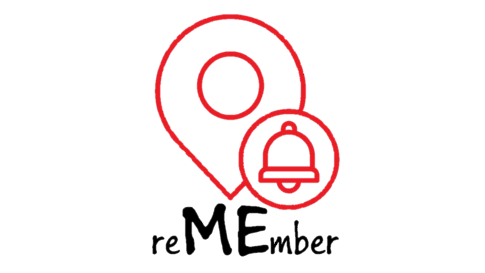

<ion-header>
  <ion-toolbar>
    <ion-title>
      
      <ion-label class="aa"> היסטוריית חיפושים</ion-label>
    </ion-title>
  </ion-toolbar>
</ion-header>

<ion-content>
  <ion-fab vertical="top" horizontal="end">
    <ion-fab-button color="dark" fill="outline" title="סנן">
      <ion-icon name="add"></ion-icon>
    </ion-fab-button>
    <ion-fab-list side="start">
      <ion-button color="dark" fill="outline" (click)="getFound()">נמצאו</ion-button>
      <ion-button color="dark" fill="outline" (click)="getNotFound()">לא נמצאו</ion-button>
      <ion-button color="dark" fill="outline" (click)="getAll()">הכל</ion-button>
    </ion-fab-list>
  </ion-fab>

  <br>
  <br>
  <br>
  <br>


  <ion-list>
    <ion-label class="l"> מוצר</ion-label>
    <ion-label class="l">קטגוריה</ion-label>
    <ion-label class="l">חנות</ion-label>
    <ion-label class="l">מצב </ion-label>
    <ion-label class="l">מחק </ion-label>
    <ion-item *ngFor="let item of this.searchService.searchesForHistory ;let i=index">
      <ion-label>
        <p title="{{item.nameProduct}}">{{item.nameProduct}}</p>
      </ion-label>
      <ion-label>
        <p title="{{item.nameCategory}}">{{item.nameCategory}}</p>
      </ion-label>
      <ion-label>
        <p title="{{item.nameShop}}">{{item.nameShop}}</p>
      </ion-label>
      <ion-label>
        <p>{{arrayStatus[i]}}</p>
      </ion-label>
      <ion-label>
        <ion-button id="b" fill="clear" color="medium" (click)="remove(item)">
          <ion-icon name="trash" slot="icon-only" md="md-trash"></ion-icon>
        </ion-button>
      </ion-label>
    </ion-item>
  </ion-list>

</ion-content>